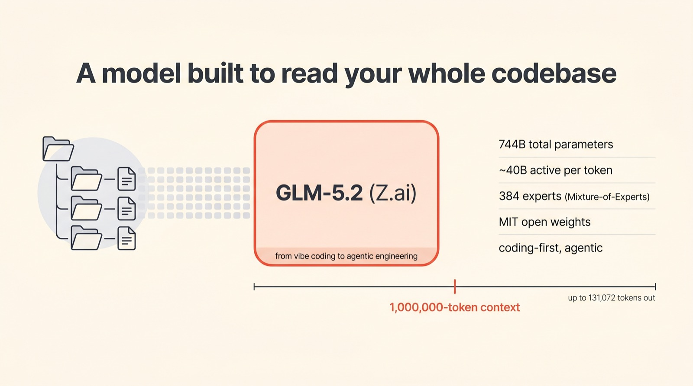
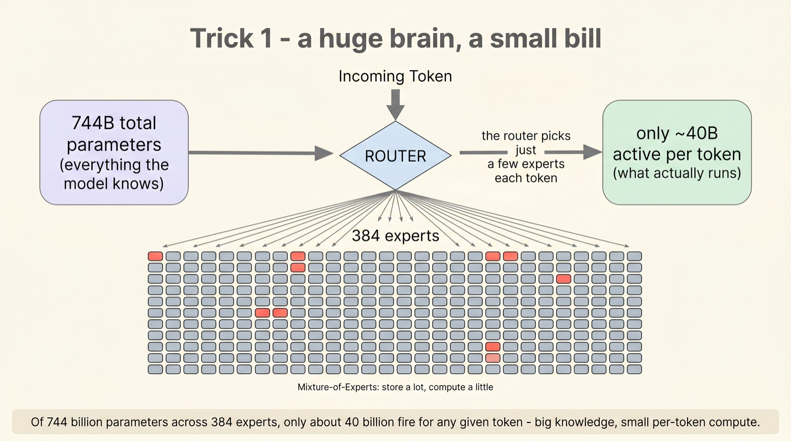
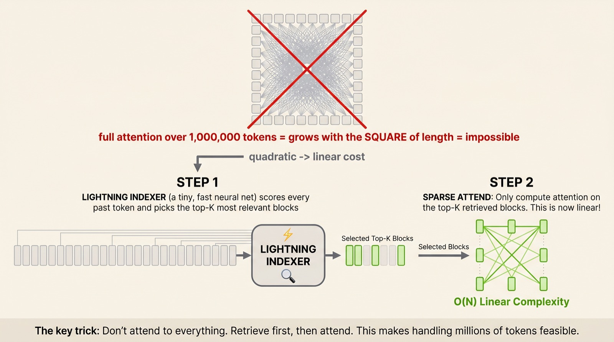
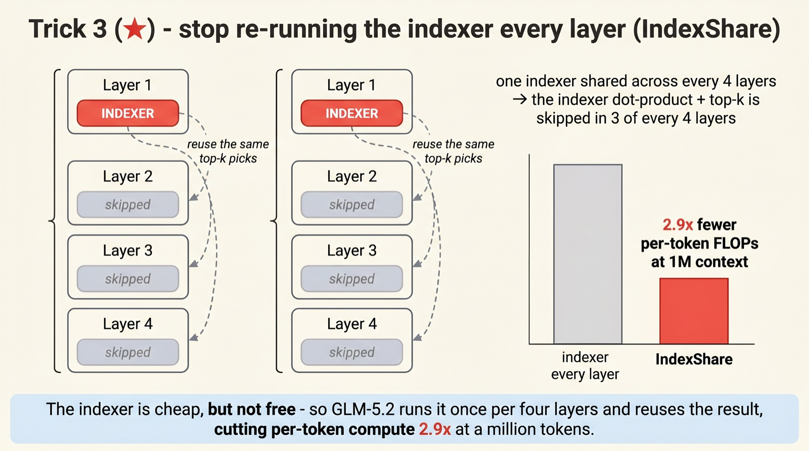
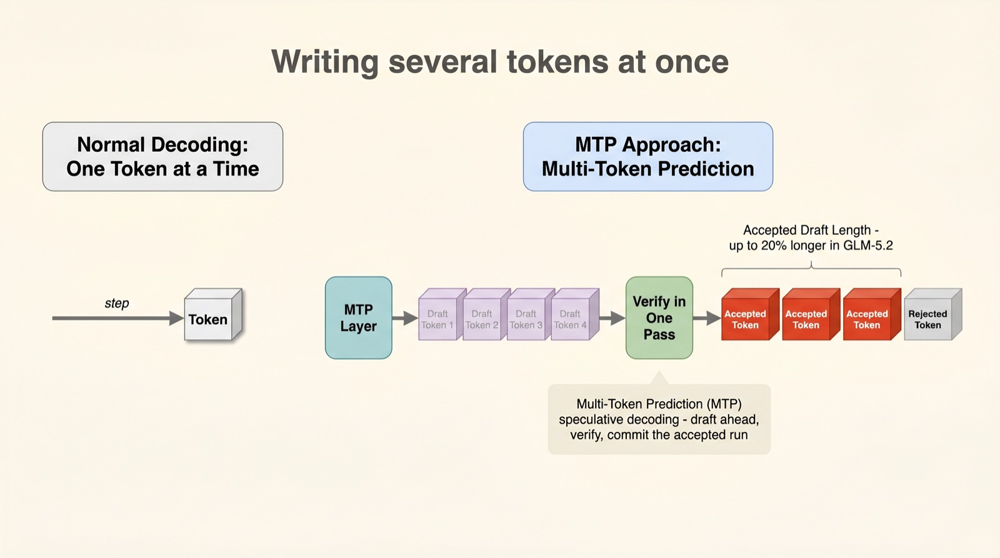
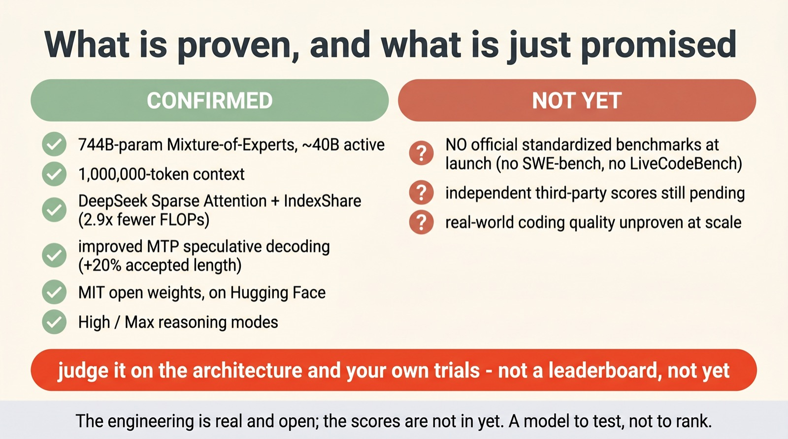

Inside GLM-5.2's million-token engine
A million tokens,
made cheap
Z.ai's GLM-5.2 is built to hold your entire codebase in its head — a usable one-million-token context, open under MIT. The headline is the size. The interesting part is the bill: how do you make a model attend to a million tokens without it costing a fortune? The answer is three nested tricks.
Released June 2026 by Z.ai (Zhipu), GLM-5.2 is a 744-billion-parameter Mixture-of-Experts model positioned for long-horizon, agentic coding. Under the hood it stacks three efficiency moves — sparse experts, sparse attention, and a new trick called IndexShare — plus faster decoding. We'll unpack each, then be honest about the one thing missing: published benchmarks.
Scroll to begin.
↓
A model built to read your whole repo
Most chat models meet your code one file at a time. GLM-5.2, released in June 2026 by the Chinese lab Z.ai, is built for the opposite: to take in an entire repository — every file, the tests, the history — and reason across all of it at once. Its context window holds a million tokens, with room to write back up to 131,072 more.
That single capability reshapes what the model is for. It isn't pitched as a clever chatbot; it's pitched as an engine for long-horizon, agentic coding — the kind of multi-step refactor or feature build that a human engineer carries in their head over an afternoon. Z.ai frames the whole GLM-5 line as a move "from vibe coding to agentic engineering," and it ships under a permissive MIT licence, weights and all.

But a million-token context is easy to claim and brutally hard to afford. Naively, paying attention to a million tokens is staggeringly expensive — the cost of attention grows with the square of the length. So the real engineering story of GLM-5.2 isn't the number on the box. It's the stack of tricks that makes that number usable. There are three, nested inside each other.
744 billion parameters, 40 billion fire
The first trick is the one most modern frontier models share: Mixture-of-Experts. On paper, GLM-5.2 is enormous — 744 billion parameters, spread across 384 specialist sub-networks called experts. If all of them ran on every token, it would be ruinously slow. They don't.
Instead, a small router looks at each incoming token and picks just a handful of experts to handle it. The rest sit idle. So while the model knows 744 billion parameters' worth of things, only about 40 billion actually compute for any given token — roughly one part in eighteen. You get the breadth of a giant model at the running cost of a much smaller one.

This is the foundation, but on its own it doesn't solve the long-context problem. MoE makes each token cheaper to process; it does nothing about the fact that, at a million tokens, every token wants to look at every other one. For that, you need to be sparse in a second dimension — not in which experts run, but in which tokens you bother to look at.
Don't attend to a million tokens
Here's the heart of the cost problem. In ordinary attention, producing each new token means comparing it against every previous token. At a million tokens that's a million comparisons per step, and the total work scales with the square of the length — the wall that makes long context so expensive.
GLM-5.2 adopts a fix pioneered by DeepSeek, called Sparse Attention. The insight is almost obvious once said: of a million past tokens, only a few dozen are actually relevant to the next word. So why look at all of them? A tiny, fast neural network — DeepSeek's Lightning Indexer — quickly scores the past and retrieves only the top-K most relevant blocks. Real attention then runs over just those few. Retrieve first, then attend.

That alone turns the impossible into the merely expensive — quadratic cost becomes roughly linear. But notice the new character we've introduced: the indexer itself. It's lightweight, yes, but it isn't free, and a deep model runs attention dozens of times over. Paying for that indexer at every single layer is where GLM-5.2 found its own contribution.
IndexShare: the headline trick
This is GLM-5.2's genuinely new idea, and it's the kind of optimisation that feels obvious only in hindsight. The Lightning Indexer's job is to decide which past tokens matter. GLM-5.2's bet is that this decision doesn't change much from one layer to the next — so why recompute it every layer?
Under IndexShare, the model groups its layers into blocks of four. Only the first layer in each block runs the indexer; the top-K tokens it selects are then reused by the next three layers as-is. The expensive part of the indexer — scoring every token and sorting for the top-K — happens once instead of four times. Three out of every four layers skip it entirely.

The payoff is concrete: at a one-million-token context, IndexShare cuts per-token compute by 2.9×. And because the model was trained with the trick switched on from the middle of training onward, it isn't a lossy shortcut bolted on at the end — GLM-5.2 reportedly beats its predecessor, GLM-5.1, on long-context tasks while doing less work. Cheaper and better, from the same idea.
Writing several tokens at once
The three tricks so far make reading a million tokens cheap. The last one makes writing the answer faster. Normally a model generates one token at a time, each step waiting on the last — a strict, slow single file.
GLM-5.2 leans on Multi-Token Prediction for speculative decoding (a cousin of the draft-then-verify idea we've covered before). A small MTP module drafts several upcoming tokens in one go; the main model then verifies that whole run in a single pass, committing the tokens it agrees with and stopping at the first it doesn't. Guess ahead, check in bulk, keep what's right.

The improvement in GLM-5.2 is that its refined MTP layer gets more of its guesses accepted — the accepted run is up to 20% longer. More tokens committed per verification step means fewer steps overall, and noticeably faster output. Four tricks, then: sparse experts, sparse attention, a shared indexer, and bulk decoding — each attacking a different slice of the cost.
What's proven, what's promised
Here's where the honesty matters, because it's easy to read all this cleverness as a finished verdict. The architecture of GLM-5.2 is real, documented, and open — you can download the weights today. What's conspicuously absent is the part everyone usually leads with: the scores.
At launch, Z.ai published no official standardized benchmarks — no SWE-bench Verified, no LiveCodeBench, no head-to-head leaderboard numbers. For a model positioned squarely at coding, that's a notable gap. Independent third-party evaluations are still trickling in. So the right posture is calibrated: judge GLM-5.2 on its open architecture and your own trials, not on a ranking that doesn't yet exist.

Why this matters
Step back from GLM-5.2 the product and the pattern is the real story. A "one-million-token context" sounds like a marketing number, but underneath it is a careful chain of sparsity: don't run every expert, don't attend to every token, don't even re-run the indexer every layer. Each trick attacks a different place the cost hides, and stacked together they turn an impossible context length into a shippable one.
That it arrives as open MIT weights is the part with teeth. The efficiency ideas here — sparse attention, a shared indexer, multi-token decoding — are now in the open for anyone to read, run, and build on. Whether or not GLM-5.2 tops a leaderboard when the scores finally land, those ideas don't go back in the box.
So treat today's piece as a map of the machinery, not a verdict on the model. The honest summary is the most useful one: the engineering is real and inspectable; the scoreboard is still blank. The best thing you can do with an open model whose benchmarks haven't shipped is the oldest thing in engineering — point it at your own problem and see.